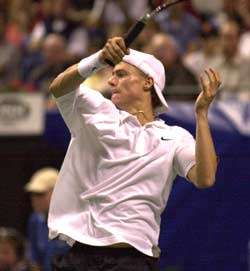
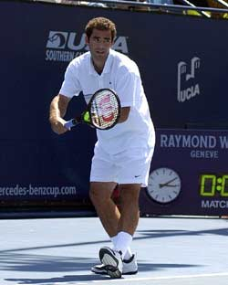
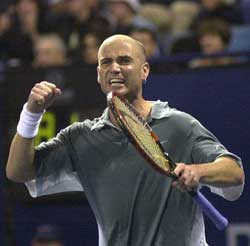

← Bài trước: The Framework - A New Paradigm for Technique and Movement | 🏠 Famous Coaches Trang chủ | Bài tiếp: → Learning to play
John McEnroe: Học hỏi từ những tay vợt hàng đầu
Thư viện kiến thức quần vợt thống nhất — Cơ bản, Phân tích kỹ thuật, Thư viện tham khảo và nhiều hơn nữa
John McEnroe: Học hỏi từ những tay vợt hàng đầu
với John Yandell
Nhiều người bỏ qua thực tế rằng phong cách của tôi dựa trên việc chơi theo tỷ lệ và ép đối thủ phải đánh tốt hơn để đánh bại tôi.
Tôi nghĩ rằng mọi tay vợt quần vợt, bao gồm cả tôi, đều muốn học hỏi từ những tay vợt hàng đầu. Khi hầu hết các tay vợt xem các trận đấu của những tay vợt hàng đầu, họ thường tập trung vào những điều rõ ràng. Vâng, điều đó thú vị khi cố gắng sao chép cú thuận tay của Andre Agassi, hoặc đánh giao bóng với tốc độ 125 mph như Pete Sampras. Nhưng để chơi quần vợt thắng trận ở bất kỳ cấp độ nào, bạn phải thực tế về khả năng của mình. Có những điều khác để tìm kiếm nếu bạn muốn thực sự học hỏi từ việc xem những tay vợt hàng đầu.
Trong vài năm qua khi làm người bình luận, tôi đã xem hàng trăm trận đấu, nhiều hơn nhiều so với khi tôi còn là một tay vợt. Kết luận của tôi? Gần như bất kỳ tay vợt nào cũng có thể học được rất nhiều bằng cách xem chiến lược trong các trận đấu của những tay vợt hàng đầu, cách họ thiết lập các điểm và quan trọng hơn, cách họ kết thúc chúng.
Điểm quan trọng là, khi bạn bước vào một trận đấu, bạn cần có một số ý tưởng cụ thể về cách bạn sẽ đánh bại một đối thủ nhất định. Điều này có nghĩa là bạn phải biết điểm mạnh và điểm yếu của đối thủ và cách chúng phù hợp với bạn. Những trận đấu này là nền tảng cho kế hoạch của bạn.
Trên tour, loại thông tin này là kiến thức chung, nhưng ở cấp độ câu lạc bộ, nhiều tay vợt thậm chí không nghĩ đến nó. Điều đó thật điên rồ vì ở cấp độ câu lạc bộ, chiến lược có thể làm nhiều hơn cho bạn hơn là trên tour. Không phải lúc nào cũng có câu trả lời cho cú giao bóng của Pete Sampras. Thông thường, ở cấp độ câu lạc bộ, các tay vợt có những điểm yếu rõ ràng có thể bị khai thác bằng cách chơi những cú đánh và/hoặc mẫu đánh phù hợp.

Đối với Hewitt, việc phủ bóng rộng là một vũ khí làm mòn đối thủ.
Chiến lược và Tỷ lệ
Thật khó tin rằng chiến lược và tỷ lệ là nền tảng của thành công của tôi.
Đôi khi tôi nghĩ rằng mọi người nên dành thời gian quan sát nhiều hơn phần của trò chơi này, thay vì những gì tôi có thể đã nói với một hoặc hai quan chức.
Khi mọi người nói về cách tôi chơi, họ thường mô tả nó là phong cách tấn công có rủi ro cao, nhưng tôi không thực sự thấy như vậy.
Khi tôi đang lên, tôi cố gắng phát triển một trò chơi không có bất kỳ điểm yếu rõ ràng nào, vì vậy các tay vợt không có ý tưởng rõ ràng về cách đánh bại tôi. Mục tiêu của tôi là giữ lỗi của mình ở mức tối thiểu và ép đối thủ phải đánh tốt hơn để đánh bại tôi. Đó là quần vợt tỷ lệ cao và đó là điều gì thắng hầu hết các trận đấu.
Vì là tay trái, tôi đã phát triển khả năng giao bóng rộng, đặc biệt là ở góc ad, và điều này dẫn đến nhiều cú bắt lưới dễ dàng và nhiều điểm dễ dàng trên giao bóng của tôi. Các tay vợt khác có những mẫu đánh ưa thích của riêng họ.

Một lý do tại sao cú giao bóng đầu tiên của Pete rất tuyệt vời: nó đi vào 60% thời gian.
Agassi có thể đánh trái tay chéo cho đến khi anh dẫn trước và đi xuống đường giữa sân. Hoặc anh có thể chạy quanh trái tay và đánh cú thuận tay bên trong ra ngoài hoặc bên trong vào.
Một tay vợt như Lleyton Hewitt làm mòn bạn với khả năng phủ bóng tuyệt vời. Anh có thể đánh bại bạn từ góc sau sân, nhưng cũng có khả năng tấn công bóng ngắn.
Pete Sampras có cú giao bóng tuyệt vời, nhưng anh cũng có trò chơi rất hoàn chỉnh. Anh có thể đánh bại bạn ở bất kỳ đâu trên sân, tùy thuộc vào tình huống.
Điểm quan trọng là, tất cả những tay vợt này chơi theo tỷ lệ dựa trên khả năng của họ. Nếu bạn muốn thành công, bạn phải tìm cách sử dụng những cú đánh của mình để giành được điểm một cách nhất quán.
Cơ bản của Quần vợt Thắng trận
Đây là một số điều mà gần như bất kỳ tay vợt nào cũng có thể học được từ việc xem những tay vợt hàng đầu. Chúng là những điều cơ bản nhất, nhưng khi tôi xem các trận đấu câu lạc bộ, tôi ngạc nhiên khi thấy có rất ít tay vợt hiểu chúng. Nếu bạn theo những điểm đơn giản này và có thể tích hợp chúng, bạn sẽ vượt xa trò chơi và có thể bắt đầu thắng nhiều trận đấu hơn.
Nếu cú thuận tay của bạn là vũ khí, hãy chạy quanh trái tay và tấn công bóng ngắn.
Giao bóng tỷ lệ cao trên cú giao bóng đầu tiên: Xem Pete. Trong suốt sự nghiệp của anh ấy, anh ấy đã giao bóng khoảng 60% trên cú giao bóng đầu tiên, và anh ấy luôn có được cú giao bóng đầu tiên vào những thời điểm quan trọng. So sánh với tay vợt câu lạc bộ cố gắng đánh một cú giao bóng phẳng lớn đi vào vài lần trong một set.
Giữ bóng sâu trong các lượt đánh: Xem Lleyton Hewitt. Nó gần như không thể tấn công nếu bạn phải đánh bóng từ rất xa baseline. Độ sâu là một vũ khí, một vũ khí mà những tay vợt ở bất kỳ cấp độ nào cũng có thể phát triển. Nếu có lựa chọn, việc đánh bóng sâu hơn là quan trọng hơn nhiều so với việc đánh bóng mạnh.
Sử dụng tất cả các góc của sân: Xem Martina Hingis. Sân quần vợt rất lớn. Bạn có thể đánh bóng ngắn chéo không? Cú bỏ nhỏ? Cú đánh bóng? Loại đa dạng này có thể quan trọng hơn trong quần vợt câu lạc bộ và có thể tạo ra kết quả tốt hơn. Nó cũng hiếm hơn, vì vậy đó có thể là một lợi thế lớn.
Tấn công bóng ngắn: Xem Agassi. Di chuyển vào sân hoặc di chuyển xung quanh bóng ngắn ở phía trái tay và đánh bên trong ra ngoài và bên trong vào. Bạn không nhất thiết phải đánh bóng mạnh. Hầu hết các tay vợt câu lạc bộ có cú thuận tay tốt hơn so với trái tay, nhưng bạn hiếm khi thấy họ chạy quanh bóng.
Bạn không nhất thiết phải đánh trả giao bóng mạnh để tận dụng giao bóng thứ hai yếu.
Cố gắng áp lực giao bóng yếu: Xem tất cả những tay vợt hàng đầu thành công! Việc phá giao bóng rõ ràng là rất quan trọng trong quần vợt chuyên nghiệp. Nó có thể quan trọng hơn trong quần vợt câu lạc bộ, vì ít tay vợt giữ giao bóng một cách thường xuyên hơn.
Để trả giao bóng tốt ở cấp độ câu lạc bộ, điều đó thường là vấn đề chỉ cần trả được tỷ lệ cao giao bóng vào sân. Nó không hữu ích khi đánh trả giao bóng lớn chạm vào hàng rào. Nhưng bạn nên áp lực giao bóng yếu nhất, đặc biệt là giao bóng thứ hai. Điều này chủ yếu là vấn đề đi trước với một vị trí tốt, hoặc đánh chì và đi vào, hoặc thậm chí đánh cú bỏ nhỏ đối với một cú giao bóng rất mềm.
Hãy Linh hoạt - Thay đổi Chiến lược Thua cuộc
Đây là một số yếu tố bạn cần xem xét khi quyết định cách chơi đối thủ nhất định. Một điểm chung: nếu chiến lược của bạn không hoạt động, bạn cần linh hoạt.

Nếu bạn giữ trận đấu khi bạn đang thua, như Andre ở Pháp, mọi thứ đều có thể xảy ra!
Vào một thời điểm trong sự nghiệp của tôi khi tôi thua Ivan Lendl, Don Budge vĩ đại đã đưa ra một đề xuất. Hãy đến giữa sân để loại bỏ các góc trên các cú đánh truyền của Ivan. Chiến lược đã hoạt động và tôi đã có thể đảo ngược sự thống trị của Ivan trong cuộc đối đầu của chúng tôi. Bạn có thể có chiến lược tuyệt vời nhất trên thế giới nhưng nếu nó không hoạt động, thì nó không quan trọng bao nhiêu nó là tuyệt vời.
Yếu tố không thể đo lường cuối cùng là những gì tôi gọi là "sức mạnh quần vợt." Điều này có thể thực sự là khác biệt. Nhiều tay vợt, ngay cả ở cấp độ chuyên nghiệp, cũng có xu hướng từ bỏ khi họ thua hoặc mọi thứ không đi theo cách họ muốn. Trong sự nghiệp của tôi, tôi đã thắng nhiều trận đấu chỉ bằng sự nhiệt tình của mình. Bạn không bao giờ biết điều gì sẽ xảy ra trong một trận đấu quần vợt.
Hãy nhớ rằng Andre Agassi đã thua hai set không và đã quay lại để giành chức vô địch Pháp Mở rộng. Tôi chắc chắn anh ấy rất vui bây giờ anh ấy không quyết định rằng đó chỉ là ngày của anh ấy. Nếu bạn có sự dũng cảm để giữ trận đấu và chơi chắc chắn khi bạn đang thua, bạn có thể ngạc nhiên khi thấy bao nhiêu trận đấu bạn có thể đảo ngược và kết thúc bằng việc giành chiến thắng.
Nguồn: tennisplayer.net lưu trữ — Học hỏi từ những tay vợt hàng đầu.docx (Thư viện giảng dạy của John Yandell, 2002-2022). Trích xuất và hiển thị dưới dạng HTML cho Tennis Future Lab.